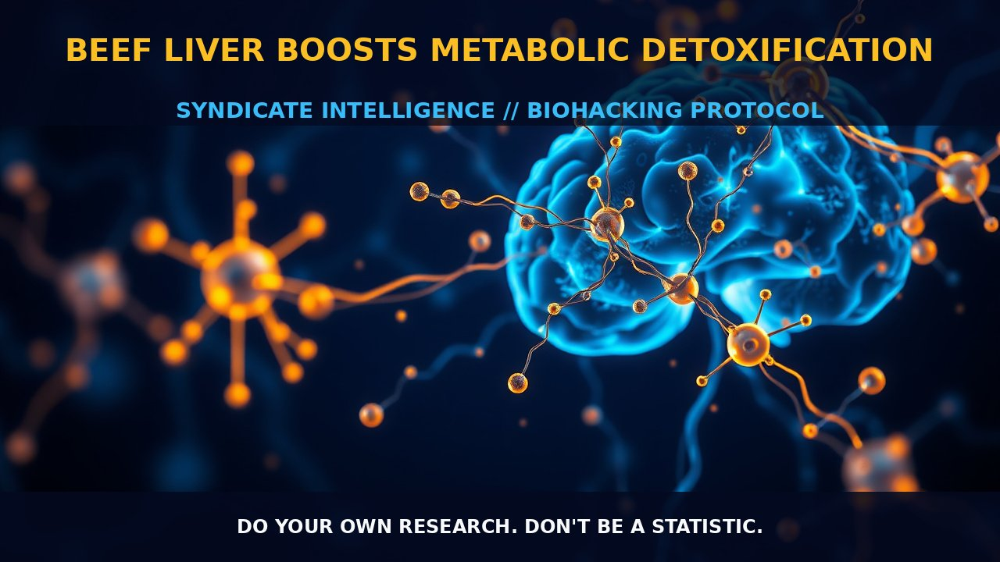

Beef Liver Benefits

MECHANICS
Beef liver health effects are deeply rooted in its nutrient density and the comprehensive metabolic functions it supports within the body. Beef liver is particularly rich in essential nutrients such as vitamin A, iron, copper, and B12, which play crucial roles in cellular metabolism and immune function. The high content of these vitamins and minerals makes beef liver a potent dietary supplement for individuals looking to enhance their nutritional profile.
The liver’s ability to break down amino acids and convert toxic ammonia into urea is vital for maintaining homeostasis within the body. This process, known as the urea cycle, ensures that excess nitrogen from protein metabolism is safely excreted in the form of urea rather than accumulating as more harmful compounds like ammonia. Additionally, beef liver contributes to bile secretion and the production of blood plasma proteins, including albumin, which are critical for maintaining fluid balance and transporting nutrients.
BIOLOGICAL LEVERAGE
The biological leverage provided by beef liver lies primarily in its support for liver function and detoxification pathways. The cytochrome P450 enzyme system within the liver is central to this process, facilitating two distinct phases of detoxification. Phase 1 involves the activation of enzymes that break down toxins into more reactive intermediates, while phase 2 includes conjugation reactions that make these compounds water-soluble and easier for the body to eliminate through urine.
By supporting these pathways with beef liver’s rich nutrient profile, individuals can enhance their liver’s detoxification capacity. This is particularly important in today's stressful work culture where alcohol consumption, poor diet, and other environmental burdens contribute to impaired liver function. Beef liver also aids in the production of red blood cells and coagulation agents, further bolstering overall health.
TACTICAL IMPLEMENTATION
Incorporating beef liver into your diet can be a strategic move for those seeking to optimize their liver health. Moderate consumption is key; aim for low-to-moderate amounts regularly rather than large doses intermittently. For instance, consuming approximately 50-100 grams of beef liver per week can provide substantial nutritional benefits without overwhelming the system.
Timing your intake strategically can also enhance absorption and utilization of these nutrients. Consuming beef liver in conjunction with meals rich in healthy fats can improve the bioavailability of fat-soluble vitamins like A, D, K, and E. Additionally, pairing beef liver with foods high in vitamin C can further boost iron absorption, maximizing its benefits.
It is important to note that while beef liver offers numerous health benefits, it may also pose risks for those with existing conditions such as gout or kidney stones due to its purine content. Furthermore, the specific impact of beef liver on reducing inflammation and supporting immune function varies depending on individual genetics and environmental factors.
Do your own research. Don't be a statistic.
Prostar Life Hack
Consuming approximately 50-100 grams of beef liver per week can provide substantial nutritional benefits without overwhelming the system.
[ AUTHOR: LEAD TECHNICAL RESEARCHER ]